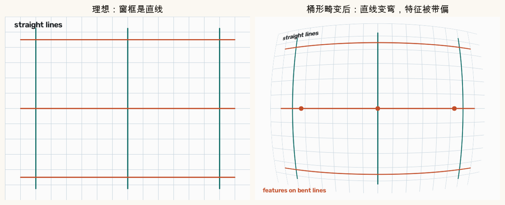
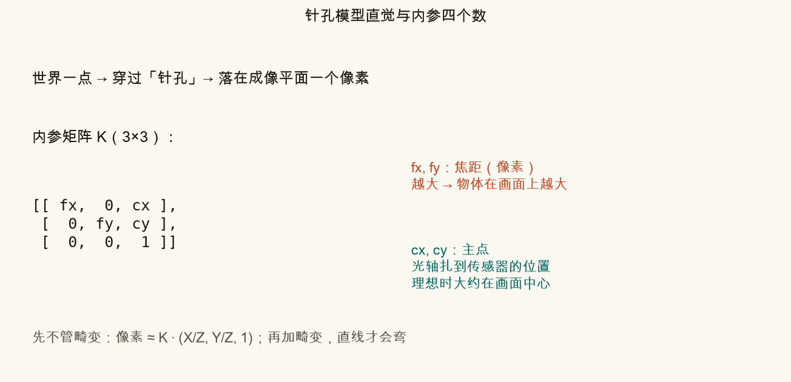
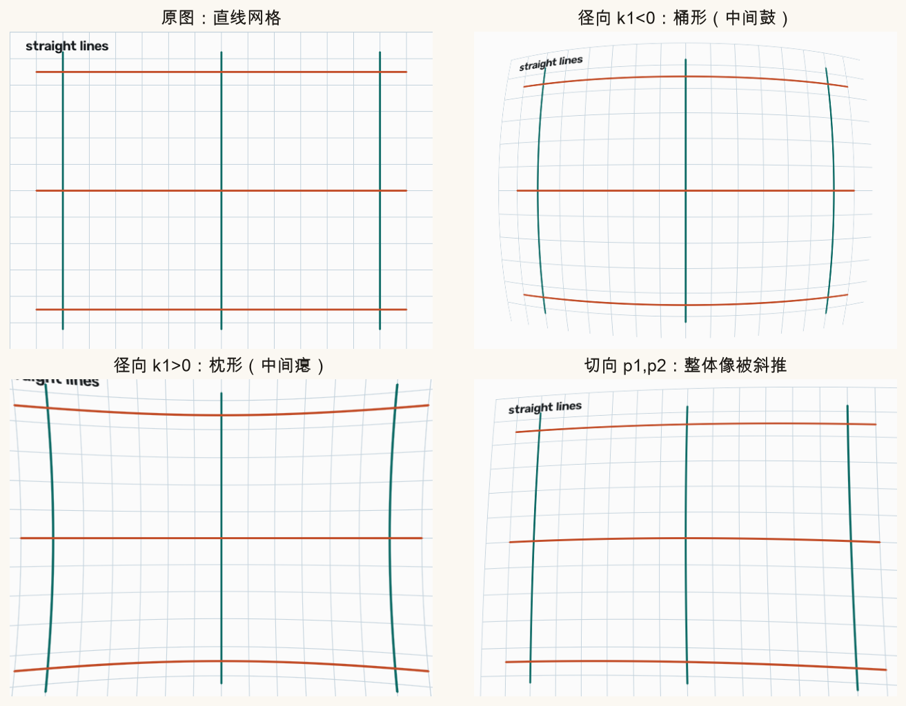
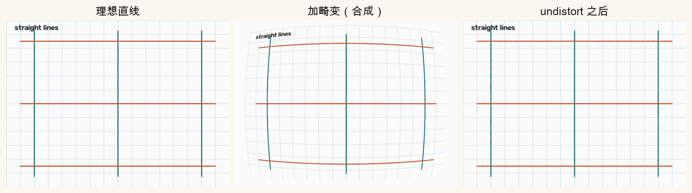
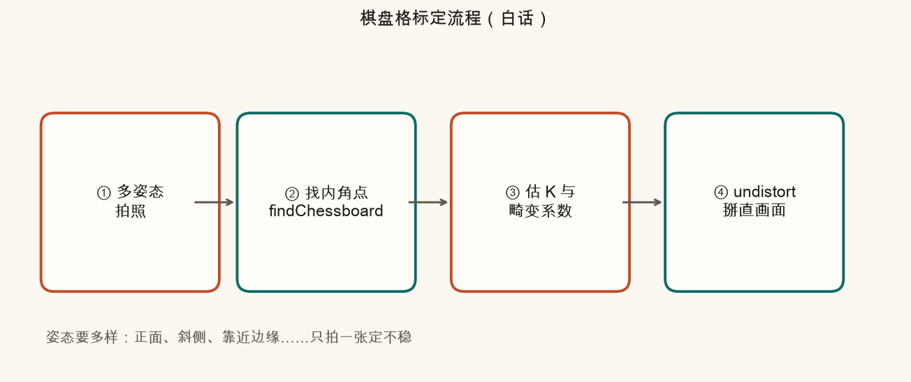
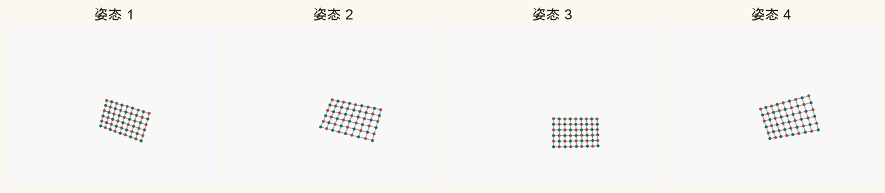
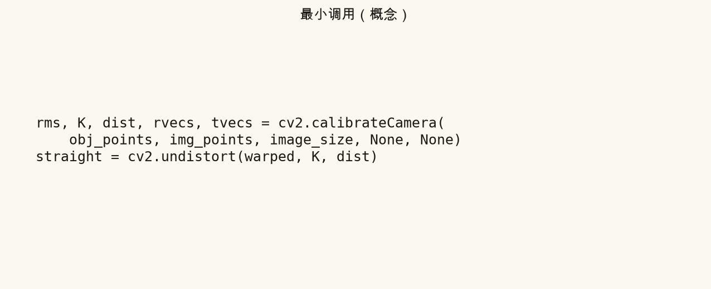
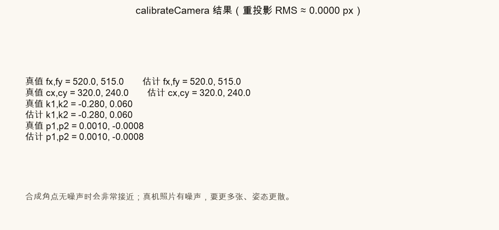
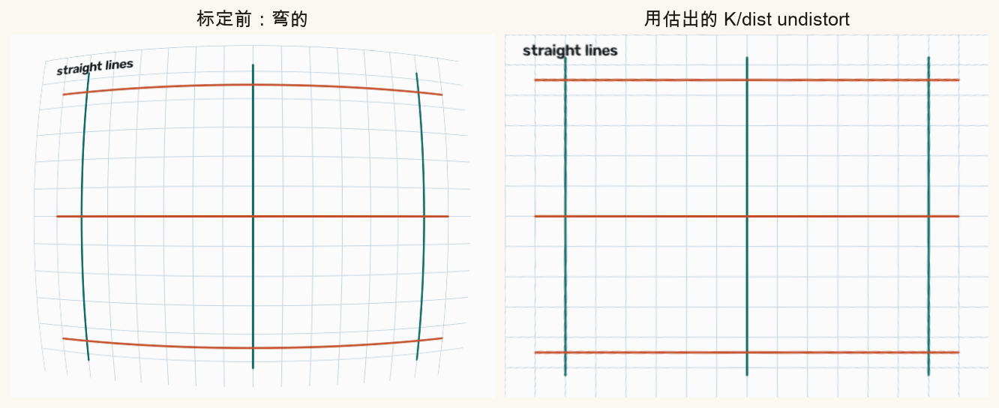

第 4 篇 · 镜头几何 · 约 55 分钟
真实镜头不是完美针孔：直线会被掰成桶形或枕形。拼接与稳像若在弯图上找特征、算光流，对应点会系统性偏掉。这一篇用小白话讲清内参、畸变、棋盘标定，以及 OpenCV 怎么把画面掰直。
第 3 篇的单应性、后面的特征匹配与光流，默认一件事：画面上的直线，在真实世界里大致也是直线（至少在同一平面投影模型下说得通）。广角镜头却常把建筑的竖边弯成弧——这叫镜头畸变。
常见两种径向畸变：
若不去畸变就直接找角点、算光流：

口诀：先把镜头模型学清楚、把图画直，再谈「两张图之间怎么对齐」。标定得到的是这台相机自己的内参与畸变；换镜头或变焦档，通常要重新标定。
先假装镜头是一个无限小的孔。世界里一点经过小孔，落在成像平面上一个位置——这就是针孔相机。真实镜头有玻璃、光圈，但工程上仍先用针孔当「理想几何」，再用畸变系数修补。
针孔模型里，和「这台传感器怎么把方向变成像素」有关的四个数，写成 3×3 的内参矩阵 K：
K = [[ fx, 0, cx ],
[ 0, fy, cy ],
[ 0, 0, 1 ]]白话公式（还没加畸变）：相机坐标系里一点 (X, Y, Z)，先除以深度变成方向 (X/Z, Y/Z)，再乘 K，得到像素坐标。
u ≈ fx · (X/Z) + cx， v ≈ fy · (Y/Z) + cy

OpenCV 常用一组畸变系数（常见写 5 个数）：
dist = [k1, k2, p1, p2, k3]k1 < 0 多表现为桶形；k1 > 0 多表现为枕形（还受 k2、焦距影响，先抓这个直觉）。合成实验：对同一张理想网格，分别加桶形、枕形、切向，一眼能看出差别。


cv2.undistort 掰回。边缘可能略裁切或拉伸，这是正常的。去畸变不会「创造」丢失的信息：弯的时候挤在一起的细节，掰直后可能发糊；画面四角有时会出现黑边，需要裁切或换新的相机矩阵（进阶：getOptimalNewCameraMatrix）。
下面画的是理想网格。拖动 k1（径向）和 p1（切向），看直线如何变弯。负的 k1 鼓成桶；正的 k1 收成枕；p1 会打破上下对称。
建议：先把 k2、p1 清零，只拧 k1，体会桶/枕；再只拧 p1，看「斜推」。真实手机镜头 k1 往往是负的小数，这里刻意夸张，方便看见。
标定要回答：这台相机的 K 和 dist 各是多少？经典做法是拍一张已知几何的板子——黑白棋盘。内角点间距已知，计算机就能反推「镜头该怎么弯、焦距该多大」。

findChessboardCorners（可再 cornerSubPix 精修）。得到每张图上角点的像素坐标。calibrateCamera，它同时估 K、dist，以及每张图的外参（板子相对相机的姿态）。undistort（或先算 remap 表再批量处理）。
打印棋盘时：纸要尽量平；方格实际边长要量准（或保证「所有格一样大」并在代码里写对尺寸）。模糊、反光、缺角会导致找不到角点。
最小逻辑（真机时 img_points 来自找角点；本篇脚本用合成角点演示同一 API）：
rms, K, dist, rvecs, tvecs = cv2.calibrateCamera(
obj_points, # 每张图：棋盘三维点列表
img_points, # 每张图：对应像素点
image_size, # (宽, 高)
None, None)
straight = cv2.undistort(warped_image, K, dist)


真机最小循环可以记成：
ok, corners = cv2.findChessboardCorners(gray, (cols, rows), None)
# 多张成功图收集进 obj_points / img_points …
rms, K, dist, _, _ = cv2.calibrateCamera(obj_points, img_points, size, None, None)
out = cv2.undistort(frame, K, dist)source .venv/bin/activate # 若尚未激活
python code/ch04_calib.py终端应出现「自检通过」，并写出课文对照图与 ch04_my_undistort.png。
ch04_why_undistort.png、ch04_distortion_types.png、ch04_undistort_compare.png、ch04_calib_*.png 等ch04_grid_*.png、ch04_barrel.png、ch04_distorted.png 等打开 code/ch04_calib.py，只改顶部四个系数。
MY_K1=0, MY_K2=0, MY_P1=0, MY_P2=0，三列图应几乎一样（无弯可掰）。MY_K1=-0.5（其余 0），中间更鼓，边缘直线更弯；undistort 后应变直。MY_K1=0.4，观察枕形（向内收）。MY_P1=0.05, MY_P2=-0.04 且 k 清零，看切向「斜推」；再 undistort 对照。先自己答，再展开。
畸变把直线变弯，特征位置与光流被系统性带偏，单应/匹配更容易对不齐、接缝更容易重影。
fx 是焦距（像素），影响「物体有多大」；cx 是主点的 x，光轴落在传感器上的水平位置。
常见说法：k1<0 偏桶形（中间鼓），k1>0 偏枕形（中间瘪）。以画面效果为准。
一张约束太少、参数耦合；多姿态（尤其让板子靠近边缘）才能稳定分开焦距与畸变。
cv2.undistort（或预先 initUndistortRectifyMap + remap）。
画面掰直之后，才能更放心地在重叠区找角点与特征：为什么平坦处难认，Harris / FAST 在看什么。
第 5 篇 · 角点与特征点（待写）